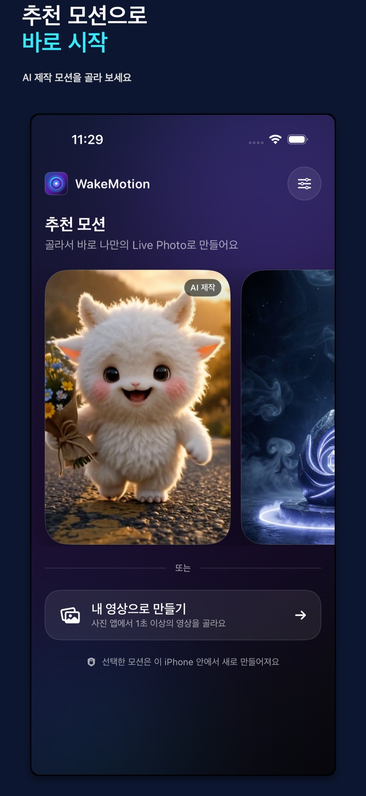
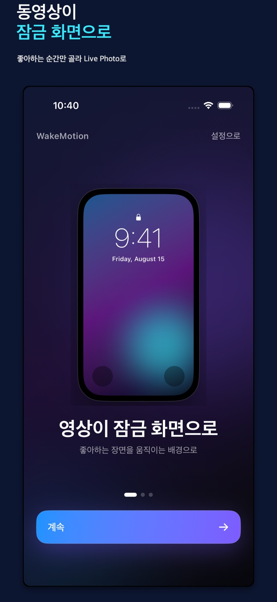

아이폰 동영상으로 라이브포토 만들기와 잠금화면 설정 방법
WakeMotion은 사진 보관함에서 직접 고른 영상의 짧은 순간을 라이브포토(Live Photo)로 바꿉니다. 처음 설치한 분도 아래 순서대로 따라 하면 저장부터 아이폰 잠금화면 설정까지 마칠 수 있습니다.
1. 먼저 준비하세요
iPhone과 잠금 화면으로 만들 동영상 하나면 충분합니다. 세로 영상이 가장 자연스럽지만, 가로 영상도 편집 화면에서 위치와 구성을 조절할 수 있습니다.
- App Store에서 WakeMotion 설치
- 사진 보관함에 사용할 영상 준비
- 첫 실행 때 카메라·마이크·사진 접근 안내 확인
2. 이 iPhone에 한 번 맞추세요
처음 실행하면 WakeMotion 화면에서 안내용 Live Photo를 한 번 촬영합니다. Apple 카메라 앱의 LIVE 설정을 따로 바꿀 필요는 없습니다.
이 과정은 현재 iPhone의 잠금 화면 재생 특성에 맞는 최소 정보를 준비하기 위한 단계입니다. 촬영한 임시 사진과 영상은 맞춤 정보 추출 직후 삭제되고, 다른 기기와 동기화되지 않습니다.
iPhone 설정에서 WakeMotion의 카메라·마이크·사진 권한을 확인한 뒤 앱으로 돌아오세요.
3. 영상에서 움직일 순간을 고르세요

- 추천 모션 또는 내 영상 선택처음이라면 앱에 포함된 AI 제작 추천 모션으로 전체 흐름을 먼저 확인해도 좋습니다.
- 1–2초 구간 선택잠금 화면에서 가장 분명하게 보일 움직임을 짧게 고릅니다.
- 대표 사진 확인잠금 화면이 멈춰 있을 때 보일 장면과 움직임의 연결을 미리 봅니다.
- 화면 구성 조절색감, 화면 채우기, PIP와 오버레이가 필요하면 편집 화면에서 적용합니다.
4. 아이폰 라이브포토를 저장하고 잠금화면으로 설정하세요

- WakeMotion에서 Live Photo 만들기무료 앱이라 저장 과정에서 광고가 표시될 수 있습니다. 광고가 준비되지 않으면 편집 결과를 잃지 않도록 저장을 계속합니다.
- 사진 앱에서 LIVE 확인저장된 항목을 열어 움직임이 원하는 구간인지 확인합니다. Live Photo 결과는 무음입니다.
- 새 잠금 화면에 추가iPhone의 배경화면 추가 화면에서 저장한 Live Photo를 고르고 움직임 옵션을 확인한 뒤 적용합니다.
아이폰 라이브포토 잠금화면이 움직이지 않을 때
사진 앱에서는 움직이는데 잠금 화면에서는 멈춰 있어요.
WakeMotion 설정의 ‘잠금 화면 호환성’을 한 단계 높여 다시 만들어 보세요. 원본 영상과 iOS 버전에 따라 결과가 달라질 수 있으므로 모든 영상의 움직임을 보장하지는 않습니다.
처음 맞춤 촬영이 완료되지 않아요.
카메라와 마이크 권한을 허용하고, 다른 앱이 카메라를 사용 중이지 않은지 확인하세요. 계속 실패하면 WakeMotion 설정에서 맞춤 정보를 초기화한 뒤 다시 시도할 수 있습니다.
일반 MP4로 저장하고 싶어요.
홈에서 Video Studio를 선택하세요. 구간 자르기, 분할, 화면 비율, 속도와 원본 소리 유지·음소거를 선택해 MP4로 저장할 수 있습니다.
내 영상은 어디에서 처리되나요?
선택한 영상과 Live Photo 변환은 iPhone 안에서 처리됩니다. WakeMotion은 사용자 미디어를 저장하는 자체 계정이나 백엔드를 운영하지 않습니다.
개인정보처리방침 자세히 보기